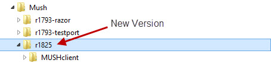
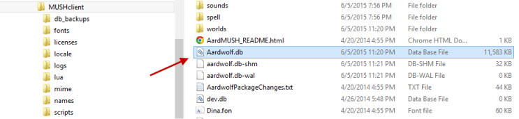
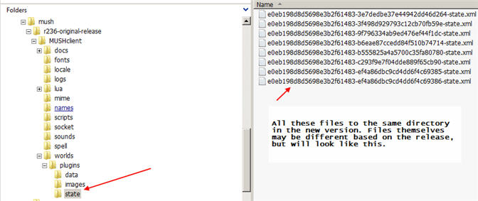
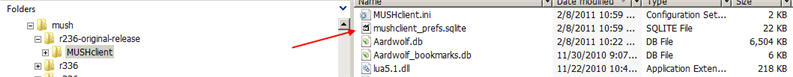
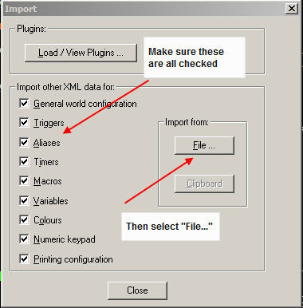
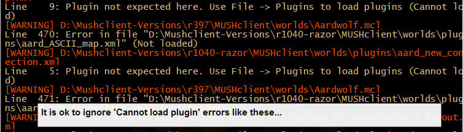

Upgrading the client with a new unzipped archive
Important: These steps should all be carried out with MUSHclient closed down - it should not be running while files are copied.
When you download a newly updated version of the client you may want to keep your mapper files and other settings from previous versions. We recommend copying over only the mapper files and reconfiguring everything else, but the following steps will help you.
Installation:Unzip the client into a new directory. A good naming convention to use is either the release number of the client (for example, r1825) or a combination of the date such as 'mush02012012'. Recommended approach would be to use the release number. In the example below, all Mushclient releases are under 'd:\mush' and the various versions are under that.
Mapper Files:Assuming your world name is the default 'Aardwolf', copy the Aardwolf.db.* files and (if it exists) the Aardwolf_bookmarks.db file from the old directory to the new directory:
Plugin Configuration:Each plugin has its own 'state' file which stores the configuration for that plugin, including the size and position of the windows. Because new variables can often be added with newer releases, it is usually safer to use the state files with the new version and resize the windows / reconfigure the plugins yourself. If you really want to copy all your settings from the old version to the new version, copy the entire contents of the world\plugins\state direcory.
Mushclient Preferences:The Mushclient preferences are stored in the database file 'mushclient_prefs.sqlite'. Copy this file from the main mushclient directory of your previous install to the new install to preserve previous Mushclient preferences.
World Configuration:If you have created a lot of aliases and triggers within the main world, you will want to import your settings from the old Aarwolf.mcl file.
On the newly installed version of Mushclient, select the 'File' menu then 'Import'. Make sure that all of the import options are checked. Then press the 'File' button.
Locate the 'Aardwolf.mcl' file in the old version and click 'open':

You will get some errors about being unable to load plugins - these are ok, you don't want the plugins from the old version to load because updated versions are already loaded in the new version.

Finally, if you had any plugins installed that are not part of the Aardwolf package, you will need to copy them over and install them manually. We'll assume that if you do, you already know how to manually install the remaining plugins. If you need help, there is always the tech board.